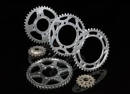
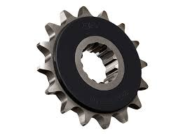
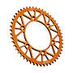
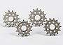
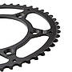
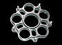

RK

SprocketsJT Steel Sprockets are manufactured using only the finest grade of C49 high carbon steel The JT Steel Sprockets range now contains over 2,500 parts for all motorcycles and ATVs. $600 |
Rubber Cushioned Front SprocketsJT rubber cushioned sprockets offer the same quality, design, and OEM proven technology as used by major Japanese motorcycle manufacturers since the early 90s to dampen chain impact. $550 |
RaceLite Aluminium Rear SprocketsPrecision CNC machined to JT’s uncompromising standards from certified 7075-T6 Ergal aviation grade aluminum alloy the JT RaceLite sprocket range is designed and engineered to withstand extreme pro-race conditions, providing maximum strength and durability at minimum weight. $500 |
Self-Cleaning Steel Front SprocketsMX-series steel front sprockets are manufactured to exacting tolerances and designed with special self-cleaning grooves for added life and performance. Made from the best chromoly steel and fully heat-treated for maximum durability, the MX range of front sprockets are designed for champions. $620 |
SC Lightweight Steel Rear SprocketsThe new standard in steel rear motocross sprockets. A unique self-cleaning design keeps the contact area clean from dirt and mud while significantly reducing weight. Made from heat-induction hardened C45 steel which lasts up to six times longer than a 7075 aluminium sprocket and greatly extends chain life. $450 |
Ducati CarriersLightweight rear sprocket conversion for OEM Ducati single-piece sprocket allows for quick affordable replacement of the rear sprocket. $500 |